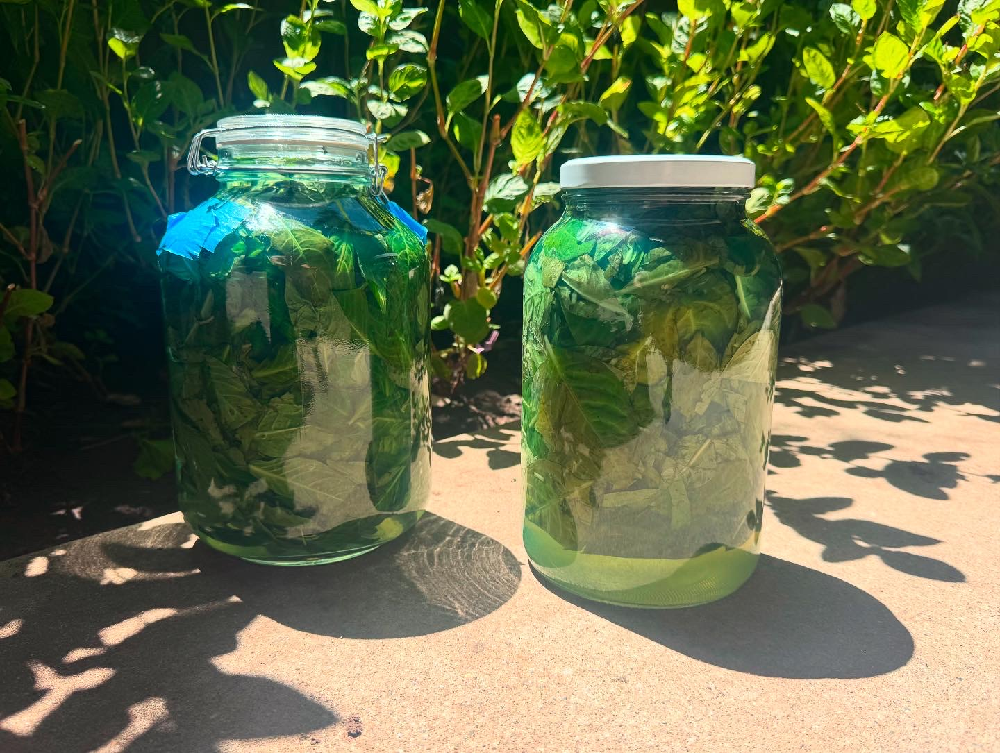
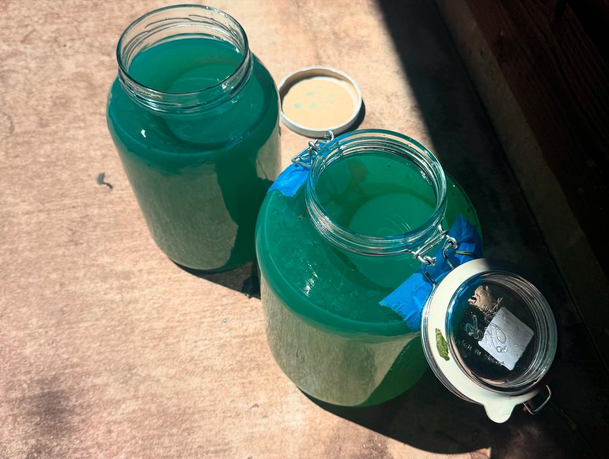
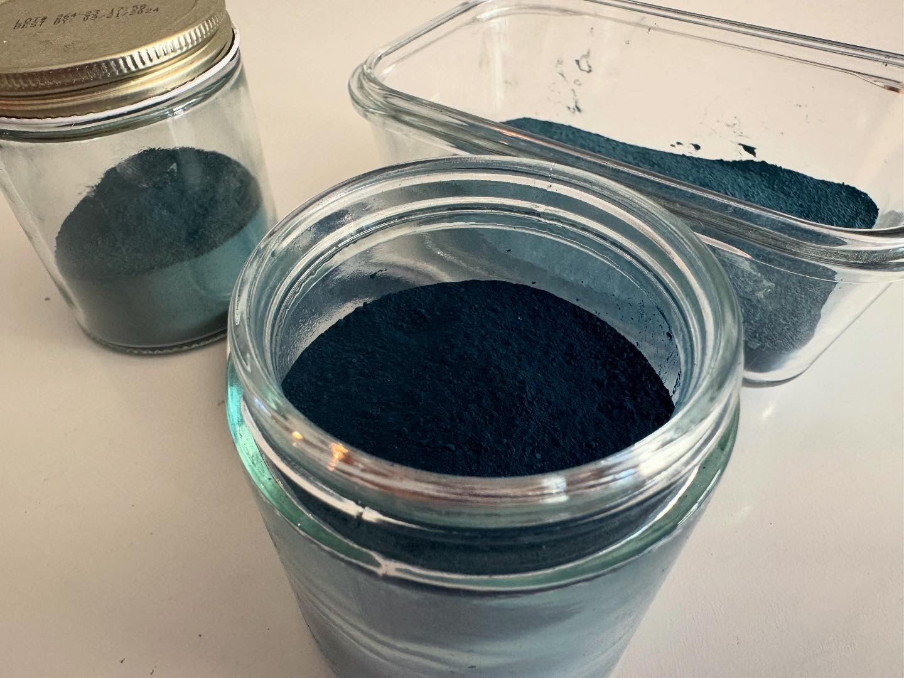

Indigo Dye Production
For a long time after seeing The Toaster Project, I wanted to make something from scratch. Over one season, I grew 3 strains of indigo from seed and processed the leaves into dye.




